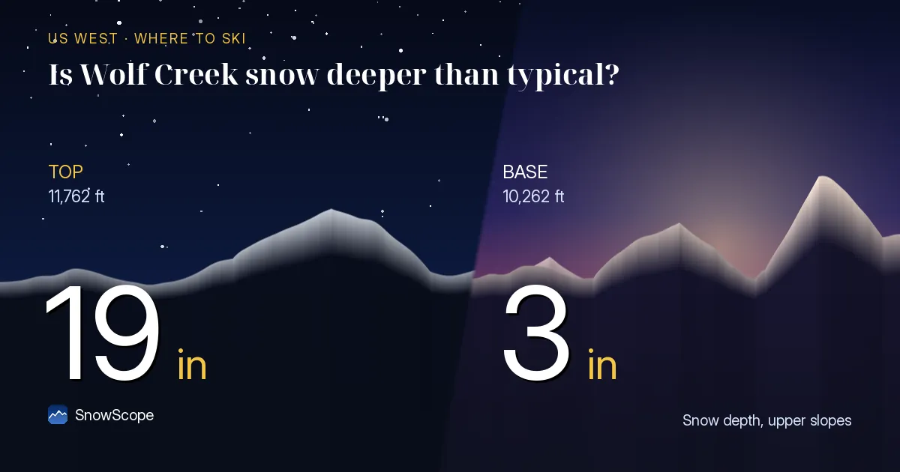

Is Wolf Creek snow deeper than typical? 361% of past average
Is Wolf Creek snow deeper than normal? Yes—mid-slopes show approximately 65 cm (26 in), which is 361% of the past average for this date. This early depth in the high mountains means significant water storage for the winter.
See the live snow forecast for Wolf Creek in the SnowScope appSnow depth, powder alerts and the 3D map, free.
Where is the deepest snow today?
Wolf Creek leads the US West with the deepest snow measured today. Its upper slopes hold 90 cm (35 in), with measurements from independent stations in the high country confirming substantial accumulation. Beartown, at 3,530 m (11,580 ft), recorded 76 cm (30 in) on November 9. Red Mountain Pass at 3,371 m (11,060 ft) measured 61 cm (24 in) the same day. These stations are several kilometers from each other, so the depth varies across the terrain—a mix of wind, slope angle, and local weather patterns.
Telluride comes second among resorts, with 85 cm (33 in) on the upper slopes. But snow depth drops quickly at lower elevations. Wolf the forecast shows only 8 cm (3 in) at the base, and Telluride's base, at 2,662 m (8,730 ft), has essentially no snow. The freezing level today ranges from 2,900 m to 4,150 m (9,500–13,600 ft) depending on location, so snow persists only on the highest ground.
| Resort | Snow depth | New snow, 72 h | Coming, next days | Top |
|---|---|---|---|---|
| Wolf Creek | 35 in (90 cm) | 0 in (0 cm) | 0 in (0 cm) | 11,762 ft (3,585 m) |
| Telluride | 33 in (85 cm) | 0 in (0 cm) | 0 in (0 cm) | 12,507 ft (3,812 m) |
| Silverton Mountain | 23 in (58 cm) | 0 in (0 cm) | 0 in (0 cm) | 10,974 ft (3,345 m) |
| Lost Trail | 20 in (50 cm) | 0 in (0 cm) | 0 in (0 cm) | 8,186 ft (2,495 m) |
| Big Sky Resort | 19 in (48 cm) | 0 in (0 cm) | 0 in (0 cm) | 11,161 ft (3,402 m) |

This is 361% of normal for mid-November—far ahead of typical
The key comparison is at mid-slope elevations where most skiers spend time. Wolf Creek's estimates 65 cm (26 in) of snow at 3,356 m (11,010 ft) today. The November average at that same height, based on 46 past November 10s, is 18 cm (7 in). The ratio is 361%—more than 3.6 times normal. This depth is deeper than the November snow on 35 of the past 46 years.
Across the region, 129 of 195 ski resorts have snow today. The snow-covered area of the region is 149,040 km2. Two days ago, before some melt, it was 173,140 km2. The trend is gradual retreat, as afternoon warmth continues. Despite that, the existing snow is well above normal for the date, signaling a wet pattern emerging.
What does early deep snow mean for water storage?
From a hydrological view, snow on the ground in mid-November is water waiting to be released. Each centimeter of snow holds roughly 10 mm of water (the exact amount depends on the snow's density and crystal structure, which vary with temperature and wind). Wolf Creek at 65 cm represents about 65 mm of water equivalent stored in the mountains. The past November average of 18 cm is about 18 mm. The difference—roughly 47 mm of extra water—will be available to rivers when melt begins.
The freezing level is currently high enough (2,900–4,150 m) that snow on upper slopes will persist. The forecast is for little to no new snow in the next three days, so this deep pack is the main water input for the week.
Where to find snow at different heights
These elevations are well above the freezing level and will not melt significantly in the coming days.
Between 3,200 m and 3,500 m, snow varies by exposure and terrain history, with the deeper areas around 30–60 cm. At 3,000 m and below, ground is mostly visible even in the best spots.
Practical outlook for the coming week
For skiers, the depth on upper runs is good for mid-November but still thin by mid-winter standards. Rocks and rough ground show through on lower slopes. Focus on terrain above 3,300 m (10,800 ft) where snow is deeper and safer. Check the Colorado Avalanche Information Center bulletin before any off-piste travel.
For water managers, the early accumulation is positive but uncertain. Station measurements are point readings 2–5 km from each resort. The water stored in this snow will be valuable if the pattern continues to deliver moisture; monitor forecasts closely over the next weeks.
Tips for skiers
- Focus on upper terrain above 3,300 m (10,800 ft) where snow is deeper—Wolf Creek's upper slopes hold 90 cm (35 in), while bases have only 8 cm (3 in).
- Watch for rocks and rough ground on runs below 3,000 m (9,840 ft); coverage is sparse and dangerous.
- The avalanche danger level is currently 1 (very low) across the region, but always check the Colorado Avalanche Information Center bulletin before skiing off-piste.
- Snow at this depth is light by mid-winter standards and can hide hazards; approach steep terrain cautiously even at higher elevations.
- Plan routes based on elevation: above 3,500 m (11,480 ft) offers the best coverage and lowest melt risk; below 3,000 m (9,840 ft), expect patchy snow.
About these numbers
Resort snow depths are the deepest snow on the resort's upper slopes on the date shown; they are estimates for an area, not a measurement at one point. Forecasts can change. Always read the official avalanche bulletin before going off-piste.
Official avalanche bulletins: Colorado Avalanche Information Center
Cite this report
For research, teaching or the press: the numbers and charts are free to reuse under CC BY 4.0 with this citation.
SnowScope (2026), Is Wolf Creek snow deeper than typical? 361% of past average, https://snowscope.app/blog/en/2026/11/us-west-wolf-creek-snow-depth-today-10-november-2026.html, accessed 2026-11-10
SnowScope (Atlas Labs). (2026, November 10). Is Wolf Creek snow deeper than typical? 361% of past average. SnowScope snow reports. https://snowscope.app/blog/en/2026/11/us-west-wolf-creek-snow-depth-today-10-november-2026.html
BibTeX
@misc{snowscope2026uswestwolfcreeksnowdepth,
author = {{SnowScope (Atlas Labs)}},
title = {Is Wolf Creek snow deeper than typical? 361% of past average},
year = {2026},
month = nov,
howpublished = {\url{https://snowscope.app/blog/en/2026/11/us-west-wolf-creek-snow-depth-today-10-november-2026.html}},
note = {Published 2026-11-10 17:49 UTC; accessed 2026-11-10}
}· CC BY 4.0 · Methods, data and tools →
Wolf Creek: snow and temperature by height, this winter vs last (tools) →
Follow Wolf Creek
Free: a message when fresh snow is coming, and the forecast every morning.
More snow reports

Getting to Telluride in winter, airport by airport: Telluride Regional, Montrose, the drive on Highway 145 with the Colorado traction law, and the free gondola to Mountain Village.

Telluride got 12 in (31 cm) of new snow in the last 72 hours, 1 in (3 cm) of it in the last 24 hours. It now has about 46 in (118 cm) on its upper …

Wolf Creek holds 34 in (87 cm) at mid-mountain on a typical 15 December. Peak prices start 20 December. Data: 13 November 2026.